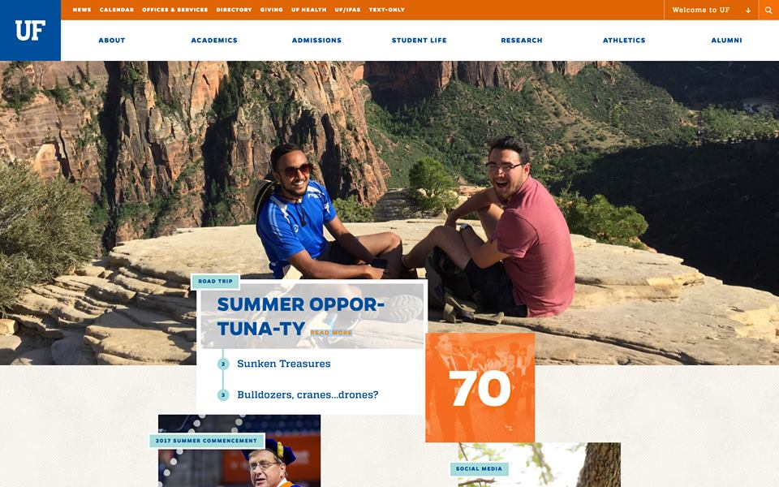

Tuna Pasta
Traveled across the United States, interviewed people and compiled stories into a serialized podcast.
Medium Article
Check out a Medium article written by me and other co-creator of Tuna Pasta, Takashi Wickes above! ^
tldr: Basically, Tuna Pasta was a crazy idea spawned by Takashi and I in which we were to create a podcast during our cross-country road trip from Florida to California. We soon realized that the content that we created with just us was very boring and strange, so on a whim we decided to interview random people. This was a new experience for both of us and ended being an amazingly rewarding and awesome experience as we interviewed 40+ people over the course of the 18 day road trip and spent the next 3 months creating full length episodes that would culminate into Tuna Pasta.
Learning Areas
- Script writing
- Audio Engineering
- Dealing with another person in a car for 18 days straight
- Marketing via news, social media, etc.
- Interviewing people
- Content iteration
Being on the front page of www.ufl.edu

News Articles About Tuna Pasta
Status
We managed against all odds including working full-time jobs over the summer, traveling back across the country again, and then the schedule of full-time students to finish the full 12 length season of Tuna Pasta. Currently, there are no plans to create a season two, but it may happen, especially if Takashi and I end up traveling for an extended period again in the future.